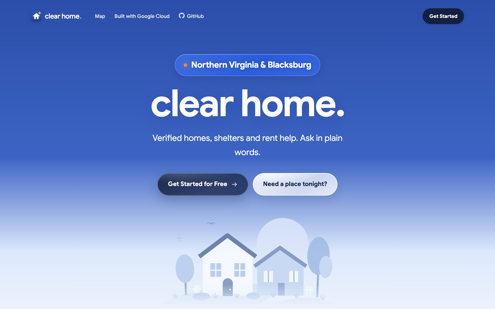

Clear Home
GDG Build with AI x Hacktoberfest 2026Team project with Pierce, Phone, and Ryan
1st overall · Hacktoberfest Hack Day Blacksburg x GDG at Virginia Tech

- AI housing assistant for Northern Virginia and Blacksburg that matches people to verified affordable listings and emergency resources.
- Gemma 4 answers are grounded only in hand-verified records, streamed live, with a fallback when the model is unavailable.
- Interactive map with walking-distance search, favorites, and a daily job that keeps listings current.
Gemma 4PythonFlaskGoogle MapsCloud Run